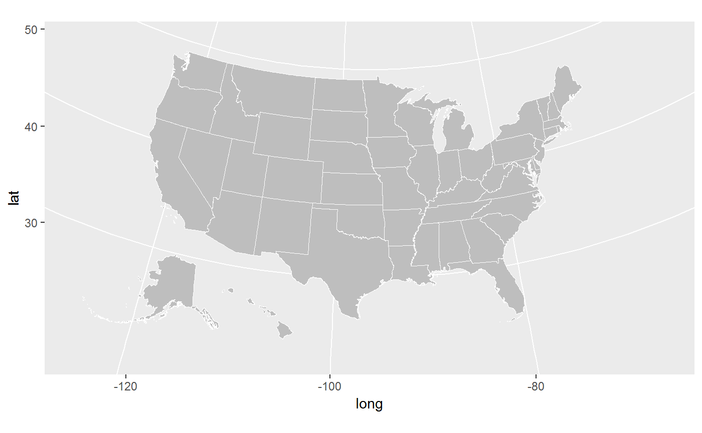
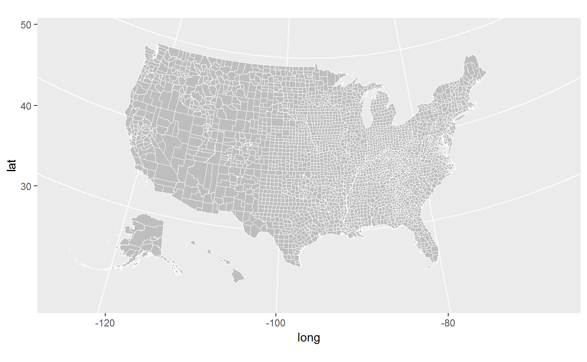
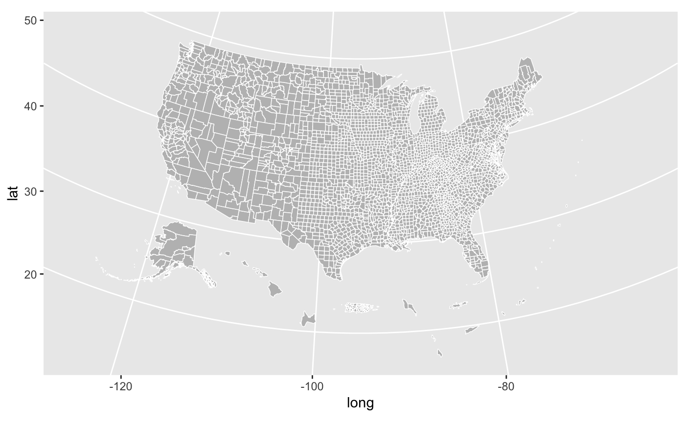
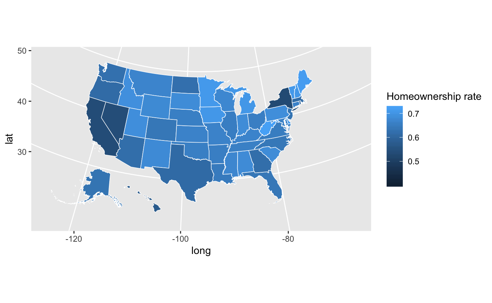
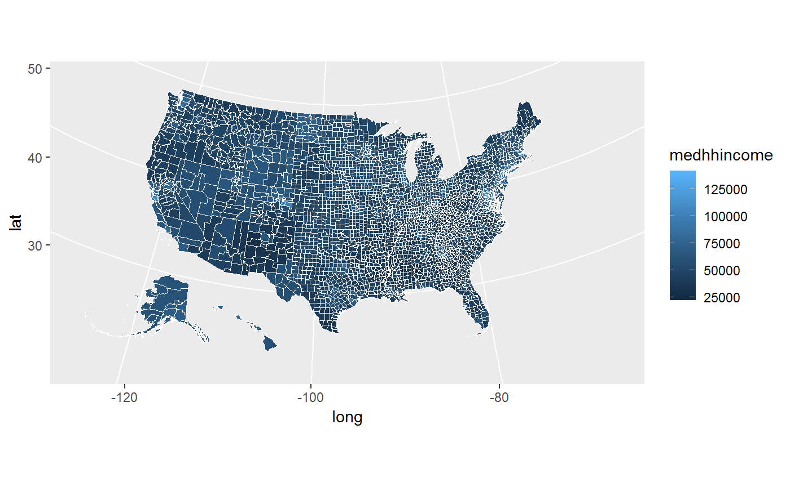
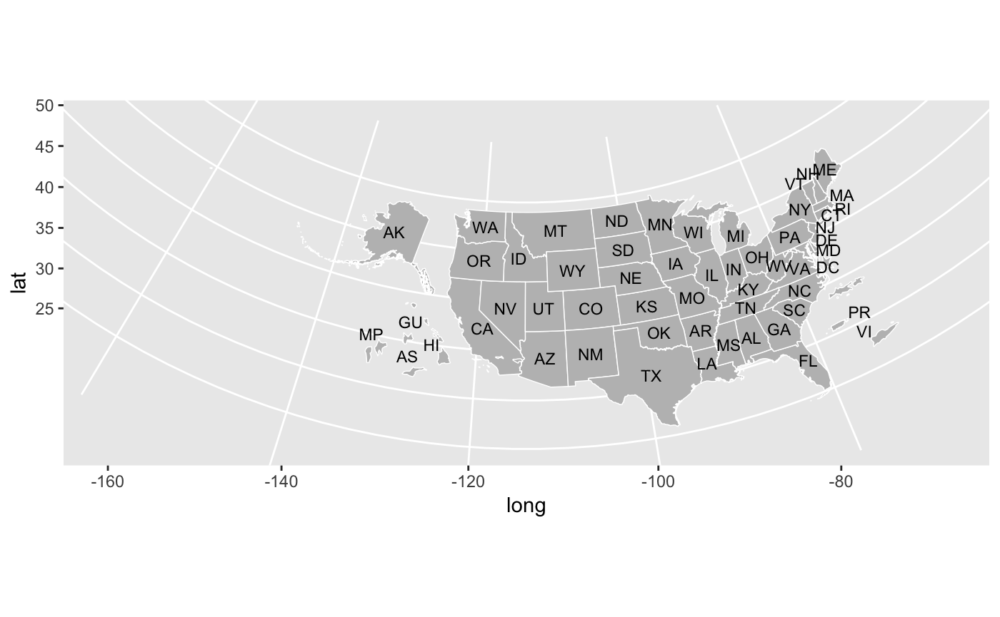
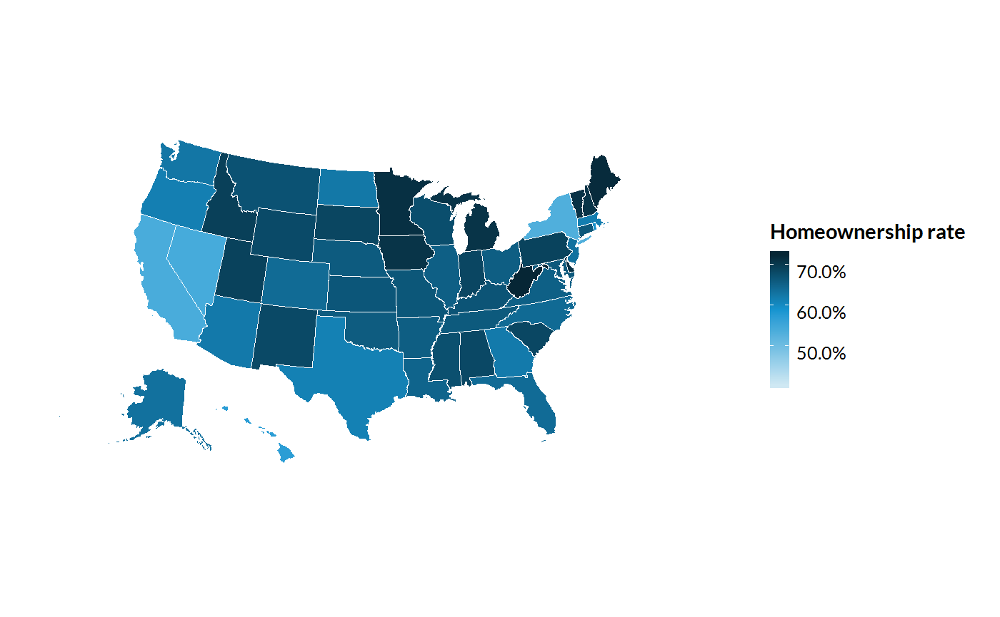
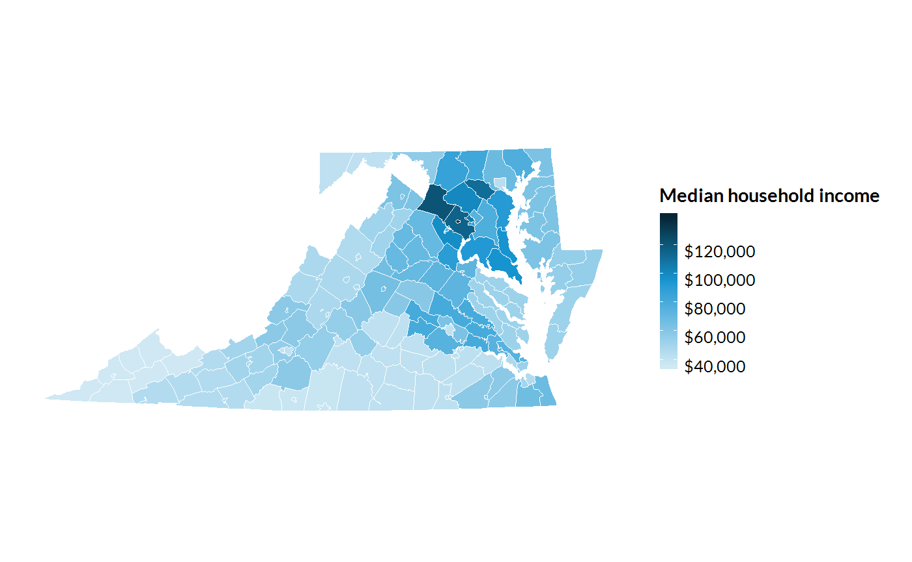

vignettes/introducing-urbnmapr.Rmd
introducing-urbnmapr.RmdThe urbnmapr package provides state, county, and other shapefiles in tibble format that is compatible to map with ggplot2. Shapefiles include Alaska and Hawaii, transformed to be displayed as insets within the continental United States.
This package is heavily inspired by and derived in part from the fiftystater package by William Murphy. In contrast, urbnmapr:
tibble data frameThere are two methods for accessing map data in urbnmapr. First, urbnmapr contains two tibble data frames, states and counties, for easily accessing simple state and county map data.
The states and counties tibbles can be used with geom_polygon() and coord_map() to create base maps of the continental United States, with Alaska and Hawaii displayed as insets:
library(tidyverse)
library(urbnmapr)
states %>%
ggplot(aes(long, lat, group = group)) +
geom_polygon(fill = "grey", color = "#ffffff", size = 0.25) +
coord_map(projection = "albers", lat0 = 39, lat1 = 45)
counties %>%
ggplot(aes(long, lat, group = group)) +
geom_polygon(fill = "grey", color = "#ffffff", size = 0.05) +
coord_map(projection = "albers", lat0 = 39, lat1 = 45)
Second, the function get_urbn_map() accesses additional maps including “ccdf”, which includes elided territories roughly positioned in the direction of their true location, and “territories_counties”, which includes territories below the continuous 48 states.
ccdf <- get_urbn_map(map = "territories_counties")
ccdf %>%
ggplot(aes(long, lat, group = group)) +
geom_polygon(fill = "grey", color = "#ffffff", size = 0.25) +
scale_x_continuous(limits = c(-141, -55)) +
scale_y_continuous(limits = c(24, 50)) +
coord_map(projection = "albers", lat0 = 39, lat1 = 45)
All tibbles include various identifiers to simplify merging data. The states states tibble contains state_fips, state_abbv, and state_name. The counties tibble contains county_fips, state_abbv, state_fips, county_name, and state_name. Both tibbles can be piped into ggplot2 to create a choropleth map.
statedata %>%
left_join(states, by = "state_name") %>%
ggplot(mapping = aes(long, lat, group = group, fill = horate)) +
geom_polygon(color = "#ffffff", size = 0.25) +
coord_map(projection = "albers", lat0 = 39, lat1 = 45) +
labs(fill = "Homeownership rate")
household_data <- left_join(countydata, counties, by = "county_fips")
household_data %>%
ggplot(aes(long, lat, group = group, fill = medhhincome)) +
geom_polygon(color = "#ffffff", size = 0.05) +
coord_map(projection = "albers", lat0 = 39, lat1 = 45)
The function get_urbn_labels() accesses additional labels including “ccdf”, which includes elided territories roughly positioned in the direction of their true location, and “territories_counties”, which includes territories below the continuous 48 states.
library(tidyverse)
library(urbnmapr)
ccdf <- get_urbn_map(map = "ccdf")
ccdf_labels <- get_urbn_labels(map = "ccdf")
ccdf %>%
ggplot() +
geom_polygon(aes(long, lat, group = group),
fill = "grey", color = "#ffffff", size = 0.25) +
geom_text(data = ccdf_labels, aes(long, lat, label = state_abbv), size = 3) +
scale_x_continuous(limits = c(-141, -55)) +
scale_y_continuous(limits = c(24, 50)) +
coord_map(projection = "albers", lat0 = 39, lat1 = 45)
library(urbnmapr) works well with the library(urbnthemes)
library(urbnthemes)
set_urbn_defaults(style = "map")
statedata %>%
left_join(states, by = "state_name") %>%
ggplot(mapping = aes(long, lat, group = group, fill = horate)) +
geom_polygon(color = "#ffffff", size = 0.25) +
coord_map(projection = "albers", lat0 = 39, lat1 = 45) +
scale_fill_gradientn(labels = scales::percent) +
theme(legend.position = "right",
legend.direction = "vertical",
legend.title = element_text(face = "bold", size = 11),
legend.key.height = unit(.2, "in")) +
labs(fill = "Homeownership rate")
household_data %>%
filter(state_name %in% c("Virginia", "Maryland", "District of Columbia")) %>%
ggplot(aes(long, lat, group = group, fill = medhhincome)) +
geom_polygon(color = "#ffffff", size = 0.05) +
coord_map(projection = "albers", lat0 = 39, lat1 = 45) +
scale_fill_gradientn(labels = scales::dollar) +
theme(legend.position = "right",
legend.direction = "vertical",
legend.title = element_text(face = "bold", size = 11),
legend.key.height = unit(.25, "in")) +
labs(fill = "Median household income")